Lesson 10 · Part 1 · The harness · 5 questions
Skills, MCP and plugins up close
Read first: Tool calls up close, Agent memory is just files
Skills, MCP servers and plugins look like three different features, but underneath they all do the same thing: they put text in the model's context. The trick that makes them scale is loading only a short description up front and the rest when needed, and that is exactly why a bad description, or 30 servers you never use, makes your agent worse.
The idea
Picture the shelf of runbooks in an on-call room. Nobody reads them all at the start of a shift. You read the spines, and when the payments alert fires, you pull out the payments runbook and read that one. A shelf of 200 runbooks is fine, as long as the spines are short and say clearly what is inside. A runbook with a spine that says "Misc" never gets opened.
An agent harness treats skills and tools the same way. This is called progressive disclosure: load information in stages, as the task needs it.
- Always loaded: the spines. Each skill's name and description, and (with tool search on) the names of MCP tools. These are in every request, so they must be short.
- Loaded when the task matches: the book. The model decides from the description alone that a skill fits, and the harness adds the skill's full text to the conversation. A tool's full schema is loaded the same way, the first time the model searches for it.
- Read only if needed: the appendix. A skill can point at reference files and scripts. The model reads a file only when the skill tells it to, and when it runs a script, only the output enters the context.

The bold box is the same expensive box as in Agent memory is just files: it rides along in every request. The difference is that a 2,000-line CLAUDE.md sits there in full, while a 2,000-line skill costs one line until it is used.
Up close: skills
A skill is a folder with a SKILL.md file. The top of the file, between the --- lines, is the frontmatter. Only that part is always loaded:
---
name: payments-client
description: >-
How to call payment providers from
our services: use lib/psp, which
has retries, rate limits and
circuit breaking. Use when adding
or changing a payment integration.
---
1. Create a client with psp.connect().
2. Never write raw HTTP calls.
Error codes: see reference.md.What happens underneath, in Claude Code:
- The listing. At session start, every skill's name and description go into the context, so the model knows what exists. Anthropic's docs put this at about 100 tokens per skill.
- The match. The model itself decides. It reads your request, compares it with the descriptions, and if one fits, it calls a Skill tool, like any other tool call (on Claude's API it reads the file with a shell command instead). So the description is the whole interface, exactly like a tool description in Tool calls up close.
- The load. The skill's body enters the conversation as one message and stays there. You can also run it yourself with
/payments-client. - The budget. The listing has a cap of about 1% of the context window. Install too many skills and Claude Code starts dropping descriptions, starting with the skills you use least, so those show up as a bare name.
The same SKILL.md format works in Claude's API and apps, and it is published as an open standard (agentskills.io) that other agents read too.
Up close: MCP
MCP, the Model Context Protocol, is not a feature of the model. The model never speaks MCP. It is a protocol between your harness and a separate program, the MCP server, that offers tools (it can also offer readable data, called resources, and prompt templates). Messages are JSON-RPC 2.0, sent one of two ways:
- stdio: the harness starts the server as a child process on your machine and writes one JSON message per line to its standard input. The server is local code running with your user's rights.
- Streamable HTTP: each message is an HTTP POST to one endpoint on a remote server.
The harness asks each server for its tools (tools/list), turns every one into an ordinary tool definition (name, description, schema), and puts them in the prompt. Claude Code prefixes the names, like mcp__jira__create_issue, so two servers can't clash. When the model calls one, the harness forwards it:
{"jsonrpc": "2.0", "id": 7,
"method": "tools/call",
"params": {
"name": "logs_search",
"arguments": {
"service": "orders",
"minutes": 30}}}The result comes back as text and becomes a normal tool_result. So an MCP tool is just a tool whose code lives in another process, and everything from the last lesson applies: the description is all the model knows, and big results stay in the context.

Up close: tool search and plugins
Tool definitions are big. Anthropic's example setup of five common servers has 58 tools that take about 55,000 tokens before the agent does anything. Their docs also say the model's ability to pick the right tool drops once it has more than 30–50 to choose from. Tool search fixes both problems with progressive disclosure:
- Tools are marked
defer_loading: true. The model starts with only a search tool, plus (in Claude Code) the bare names of the deferred tools. - When it needs one, it searches. The API returns the best matches (up to 5 by default) and adds their full definitions to the conversation, where the search happened.
- Deferred tools are kept out of the cached start of the prompt, so loading one doesn't break the cache. The definition is added at the end, like any new message.
Claude Code turns tool search on by default for MCP tools on recent models. Anthropic measured it on their MCP evaluations: Claude Opus 4 went from 49% to 74%, and Opus 4.5 from 79.5% to 88.1%.
A plugin adds no new mechanism. It is a folder that bundles the things you already know: skills/, agents/ (subagents), hooks/hooks.json, .mcp.json (MCP servers to start), a bin/ folder put on the agent's PATH, and a manifest in .claude-plugin/plugin.json. Plugins are installed from a marketplace, a git repository with a catalog file. Each part then loads by its own rules: descriptions in the listing, hooks on every matching tool call, servers started with the session. That makes a plugin the natural way to share a setup with your team (see From your laptop to your team).
What 30 servers cost
Say you connect 30 MCP servers with 10 tools each. These are my estimates: about 950 tokens per tool (the average in Anthropic's five-server example) and about 10 tokens per bare name.
| All loaded up front | With tool search | |
|---|---|---|
| Tool text at session start | ≈ 285,000 tokens | ≈ 3,000 tokens |
| Fits a 200k window? | No | Yes |
| Tools to choose from | 300 | the 3–5 it found |
| Processes on your laptop (stdio) | 30 | still 30 |
Tool search saves the context, but not the rest. Every server is still a running program with your permissions, and a vague tool name still loses the search. Removing a server you never use is cheaper than any optimisation.
Your turn
Question 1 · ~2 min
You write a careful 300-line skill for your team's database migrations. Its frontmatter says description: Helpers for the orders service. You ask the agent to add a column to the orders table, and it writes the migration by hand, ignoring your skill. Why?
Show answer
The model only saw the description. The 300 lines load after the model decides the skill fits, and "Helpers for the orders service" doesn't say migrations. Write what it does and when to use it, with the words people actually type: "How to write and test database migrations (add column, backfill, rename). Use for any schema change."
Question 2 · ~2 min
A teammate connects 15 more MCP servers "just in case" to an agent harness that loads every tool up front. Now the agent is slower, summarises its history earlier, and once used a ticket system's search tool when it meant to search the code. Why did more tools make it worse?
Show answer
Every definition is in every request, and the choice got harder. Hundreds of tool definitions eat tens of thousands of tokens before the task starts, which leaves less room and forces compaction sooner. And with far more than 30–50 tools, many with similar names, the model picks the wrong one more often. Remove unused servers, prefix tool names by service, and turn on tool search if the harness has it.
Question 3 · ~2 min
Prompt caching said that adding or removing tools mid-session breaks the cache. With tool search, a new tool definition appears halfway through the session. Does that break the cache?
Show answer
No. Deferred tools are kept out of the tool list at the start of the prompt. When the model finds one, its definition is added at the point in the conversation where the search happened, after everything already cached. The prefix doesn't change, so only the new part is read at full price.
Question 4 · ~3 min
You install four plugins and now have 150 skills. Your new skill has a sharp description, but the agent rarely uses it unless you type its name. It does appear in the / menu. What is going on?
Hint
Show answer
Its description was probably cut from the listing. The listing is capped at about 1% of the context window. Over that, Claude Code keeps every skill's name but drops descriptions, starting with the least-used skills, and a new skill has never been used. Turn off the skills you don't use (/skill-doctor shows cost and use), so the ones that matter keep their descriptions.
Question 5 · ~3 min
Stretch: a colleague suggests a plugin from a public marketplace. It has two skills, a PostToolUse hook and a local MCP server. "It's just prompts," they say. What actually runs on your laptop?
Show answer
Real code, with your permissions. The hook is a script the harness runs after every matching tool call. The MCP server is a process started with your session, and its tool results enter the context, where they can carry instructions too. Skills can ship scripts, and anything in bin/ lands on the agent's PATH. Review a plugin like a new dependency: read it, pin a version, and prefer your team's own marketplace.
Interesting fact: From one company's protocol to everyone's in a year
Anthropic published MCP on 25 November 2024 as an open standard, with ready-made servers for Google Drive, Slack, GitHub, Git, Postgres and Puppeteer. The spec says the design took inspiration from the Language Server Protocol, the standard that lets any editor talk to any language's tooling. Rivals adopted it within months: on 26 March 2025 OpenAI's CEO Sam Altman wrote that "people love MCP" and that OpenAI would add it across its products, starting with its Agents SDK, and in April Google DeepMind's CEO Demis Hassabis said Gemini would support it. On 9 December 2025, Anthropic gave MCP to the new Agentic AI Foundation under the Linux Foundation, co-founded with Block and OpenAI, next to OpenAI's AGENTS.md. By then there were more than 10,000 public MCP servers.
Facts checked: November 2026 (Claude Code docs: skills, MCP, plugins; Claude API docs: Agent Skills, tool search tool; MCP specification 2026-07-28; Anthropic engineering blog, November 2025; Anthropic announcements, November 2024 and December 2025).
Answers
- Question 1
The model only saw the description. The 300 lines load after the model decides the skill fits, and "Helpers for the orders service" doesn't say migrations. Write what it does and when to use it, with the words people actually type: "How to write and test database migrations (add column, backfill, rename). Use for any schema change."
- Question 2
Every definition is in every request, and the choice got harder. Hundreds of tool definitions eat tens of thousands of tokens before the task starts, which leaves less room and forces compaction sooner. And with far more than 30–50 tools, many with similar names, the model picks the wrong one more often. Remove unused servers, prefix tool names by service, and turn on tool search if the harness has it.
- Question 3
No. Deferred tools are kept out of the tool list at the start of the prompt. When the model finds one, its definition is added at the point in the conversation where the search happened, after everything already cached. The prefix doesn't change, so only the new part is read at full price.
- Question 4
Its description was probably cut from the listing. The listing is capped at about 1% of the context window. Over that, Claude Code keeps every skill's name but drops descriptions, starting with the least-used skills, and a new skill has never been used. Turn off the skills you don't use (
/skill-doctorshows cost and use), so the ones that matter keep their descriptions. - Question 5
Real code, with your permissions. The hook is a script the harness runs after every matching tool call. The MCP server is a process started with your session, and its tool results enter the context, where they can carry instructions too. Skills can ship scripts, and anything in
bin/lands on the agent's PATH. Review a plugin like a new dependency: read it, pin a version, and prefer your team's own marketplace.